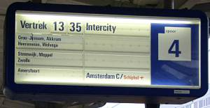

アムステルダムに始めて行く人のための
基本情報
Home > 旅日記と世界の写真 > 旅の情報 > このページ
注意 : このページは1995年〜2005年頃の状況を記述したもので、現在の状況とは大きく異なります。
このページは、メインコンテンツから切り離されてしばらく更新を忘れていましたが、月間アクセス数が600回程度あるため、情報を2010年4月現在のものに一部更新して保存しています
スキポール空港からアムステルダムへの交通手段
空港と、アムステルダム市内の位置関係や、鉄道や幹線バス路線は次の地図のようになっています。
アムステルダム中央駅に行く場合
鉄道（スキポール→アムステルダムCS）
オランダ鉄道 スキポール駅から、アムステルダム中央駅行きの各駅停車（stoptrein）・快速（sneltrein）・インターシティ（intercity）のいずれかに乗車します。途中で追い抜かされることはありませんので、最初に来た列車に乗れば最も早く到着します。
昼間の時間帯は、8～10分に1本程度の運行間隔で、所要時間は20分程度、運賃は3.80ユーロです（2010年現在）。
特急のタリス（Thalys）は特別料金が掛かるので、近距離はお勧めできない。
アムステルダムのライツェ広場・ミュージアム広場に行く場合
バス 370系統（急行）、197系統、397系統
スキポール空港のターミナルを出たロータリーにあるバス停（Schiphol Plaza NSバス停）から、マルニクス通り（Amsterdam
Marnixstraat）又はアムステルダム中央駅（Amsterdam Elandsgracht）行きアムステルダム エランズ運河（Amsterdam
Elandsgracht）行きに乗車します。乗り換えなしでライツェ広場に直通します。途中、メトロのAmstelveenseweg駅や、コンセルトヘボー前のMuseumpleinバス停に停車します。
昼間の時間帯は、約10分ごとに運行されていて、所要時間は20分前後、運賃は交通ICカードOV-chipkaartで2.38ユーロ（2011年現在）3.82ユーロ（2024年現在）。
鉄道（スキポール→アムステルダム・レリラーン駅）＋トラム1系統
オランダ鉄道 スキポール駅から、アムステルダム中央駅（Amsterdam CS）行きの各駅停車（stoptrein）・快速（sneltrein）・インターシティ（intercity）のいずれかに乗車します。1駅目の停車駅、アムステルダム・レリラーン駅（Amsterdam Lelylaan）で下車。
昼間の時間帯は、8～10分に1本程度の運行間隔で、所要時間は10分程度、運賃は2.60ユーロです（2011年現在）。
高架の鉄道駅の階段を下りると、レリラーン提督通りが直角に交わっていて、そこにトラム1系統、17系統が走っている。1系統トラムのアムステルダム中央駅行きに乗り、途中のライツェ広場で下車します。
昼間の時間帯は、5～10分に1本程度の運行間隔で、所要時間は15分程度、運賃は交通ICカードOV-chipkaartで1.16ユーロ（2011年現在）。
この方法は、1系統、17系統トラム沿線に行くときに使えます。1系統はフォンデル公園横を通り、ライツェ広場、スパイ、ダム広場を経由して中央駅へ行きます。17系統はキンケル通り（ダッペル露天市場）、マルニクス・バスターミナル、西教会（アンネフランクの家）、ダム広場を経由して中央駅へ行きます。
国立博物館、ゴッホ美術館、アムステルダム自由大学、WTCに行く場合
鉄道（スキポール→アムステルダム南駅）＋トラム5系統
オランダ鉄道 スキポール駅から、アムステルダム南駅（Amsterdam Zuid）を通る各駅停車（stoptrein）・インターシティ（intercity）のいずれかに乗車します。1駅目の停車駅、アムステルダム南駅（Amsterdam Zuid）で下車。
昼間の時間帯は、5～10分に1本程度の運行間隔で、所要時間は5分程度、運賃は2.50ユーロです（2011年現在）。
WTCはアムステルダム南駅の北側に隣接しているビルです。その他の目的地へは...
高架の鉄道駅の、スキポール側出口の階段を下りると、アムステルフェーン通りが直角に交差しています。そこに5系統トラムが走っています。ここの停留所の名前はParnassuswegです。
国立博物館やゴッホ美術館など市内中心部方面へは、5系統トラムのアムステルダム中央駅行きに乗車します。昼間の時間帯は、5～10分に1本程度の運行間隔で、例えばミュージアム広場停留所までなら所要時間10分、運賃は交通ICカードOV-chipkaartで1.02ユーロ（2011年現在）。
アムステルダム自由大学や、アムステルフェーン市街地へ向かう場合は、5系統トラムのアムステルフェーン・ビネンホフ行き（Amstelveen Binnenhof）に乗車します。自由大学は1つ目の停留所で下車します。また、終点のビネンホフまでの所要時間は15分、運賃は交通ICカードOV-chipkaartで1.32ユーロ（2011年現在）。
アムステルダム南駅には51系統のメトロも走っていて、このメトロに乗り換えてアムステルダム自由大学やアムステルフェーン方面へ向かうことも出来ます。メトロとトラムは同じ軌道を走りますので、途中で追い抜いたりすることはありません。
アムステルフェーン・ビネンホフに行く場合
旧 Zuidtangentバス 300系統（急行）
スキポール空港のターミナルを出たロータリーにあるバス停（Schiphol Plaza NSバス停）から、アムステルダム・ベイルマーアレナ（Amsterdam Bijlmer Arena）行きバス（行き先表示はAmsterdam ZOとなっている。ZOはZuid-Oost : 南東行政区の省略形）に乗車します。
昼間の時間帯は、約10分ごとに運行されていて、所要時間は15分前後、運賃は交通ICカードOV-chipkaartで1.94ユーロ（2011年現在）3.18ユーロ（2024年現在）。
この300系統バスは、ハールレム駅前からホーフトドルプ駅前を通りスキポール空港までバス専用道路を走っています。スキポール空港を出ると、アムステルフェーン・ビネンホフのバスターミナル、メトロ51系統のオラニエバーン駅を経由してベイルマーアレナ駅前（アヤックスの本拠地アムステルダム・アレナ競技場）まで結んでいます。
長距離列車 オランダ鉄道（略称 NS）
在来線はオランダ鉄道、フランスやベルギーへ向かうタリス（Thalys）などの高速鉄道はオランダ高速鉄道が運営している。また、ドイツとの間にはICEやインターシティも運行されている。
在来線は大幅な遅延はめったに起こらないが、5～10分程度の遅れは頻繁に起こっているので、時間ぎりぎりに行動すると後悔することも多々ある。座席指定は無く、1等車と2等車の区分があるだけ。在来線のどの列車に乗っても特別料金を取られることは無い（インターシティと各駅停車の料金は同じ）。
車両
1700型 電気機関車に牽かれる Plan W 型客車
主に長距離・国際列車として走っています
ベルギー方面への Intercity はほとんどこのような列車です
ICM 型電車
主にオランダ国内の Intercity として走っています
IRM 型電車
主に Sneltrein (快速) 、Stoptrein (普通) として走っています
Plan V 型電車
主に Stoptrein (各停) として走っています
Thalys (タリス)
アムステルダム発、ブリュッセル経由パリ行きのHST (高速列車)
途中、スキポール空港、ロッテルダム、アントウェルペン、ブリュッセルに停車します
終点までの所要時間は、約3時間15分 ※注意：全席指定席
ICE3 (Intercity Express)
アムステルダム発、デュッセルドルフ、ケルン経由 フランクフルト行きのHST (高速列車)
終点までの所要時間は、約4時間 ※注意：全席指定席
切符
改札機はありませんが、乗車前に切符を買って、乗客自らがバリデーションする必要があります。（信用乗車方式）
他の欧州各国と違い、かなり小さなサイズです。
バリデーションは、チケットの右側で行います。刻印機に「チン」と音がするまで挿入します。
当日券は、刻印を押す位置（下の切符の右端の青い部分）に「＃＃＃」が印刷されていますので、バリデーションする必要が無いといわれています。
一般的な乗車券
休暇シーズンには格安の鉄道パスが売られる場合もあります。遠方へ出かけるときは、駅の窓口で情報収集することをオススメします。また、オフピーク＆休日割引パス（Voordeelurenabonnement）のような長期間利用する人向けのパス類もある。
鉄道パスの例
（クリスマス期間の2名用乗り放題券）
通常の切符は自販機で買うことがよいとされ、窓口で買うと追加料金を取られます。自販機はコインしか受け付けないか、あるいはOV-Chipkaartという鉄道ICカードしか受け付けないものが多い。まれに紙幣を受け付ける自販機もある。

有人窓口で切符を買う場合の付加料金券
アムステルダム中央駅から、主要都市への運賃の例（2010年現在）
| 目的地駅 | 2等車 運賃 | Thalys 運賃 | ICE 運賃 | 所要時間 |
|---|---|---|---|---|
| Haarlem（ハールレム） | 3.80 EUR | 15分～20分 | ||
| Leiden CS（ライデン） | 8.10 EUR | 30～40分 | ||
| Rotterdam CS（ロッテルダム） | 10.20 EUR | 40～50分 | ||
| Den Haag HS（デン・ハーグ） | 13.50 EUR | 1時間 | ||
| Utrecht CS（ユトレヒト） | 6.80 EUR | 30分 | ||
| Eindhoven（アイントホーフェン） | 17.70 EUR | 1時間20分 | ||
| Maastricht（マーストリヒト） | 26.90 EUR | 3時間 | ||
| Leeuwarden（レーワルデン） | 26.10 EUR | 2時間20分 | ||
| Köln Hbf（ケルン） | 57.00 EUR | 2時間40分 | ||
| Brussel Zuid/Midi（ブリュッセル） | 37.80 EUR | 64.00 EUR | 2時間10分～2時間50分 | |
| Paris Nord（パリ） | 123.00 EUR | 2時間10分～2時間50分 |
ICEやThalysといった高速列車は、インターネットで予約することで大幅な割引価格で購入できる場合があります。何週間も前の、まだ予約がほとんど入っていない時期に購入すれば、パリやケルンまで20ユーロ程度というバーゲン価格もあります。
ICEやドイツ国内の切符購入 ： ドイツ鉄道公式ページ
Thalysの切符購入 ： Thalys公式ページ
オンラインで切符を購入した場合は、PDFファイルがダウンロード出来るので、自分で印刷して乗車する必要がある。
オンラインチケットをPDFビューアで表示した例：Thalys（左側）、ICE（右側）
乗り継ぎ検索
駅の時刻表
鉄道駅に掲示されている時刻表は、次のような形式になっている。
これと同じものが、オランダ鉄道の公式ページからダウンロードできる。オランダ語での画面操作になるが、概略は次のようになっている...
Alles over uw reis メニューの Informatie zoeken per station を選択
駅検索画面になるので、駅名を入力して検索する。それぞれの駅のページが表示されたら、時刻表は方面別にPDFファイルとして、画面の下の方に表示されるはずだ。
さらに、駅構内図を見たいときは、次のリンクをクリックする。（構内図がある場合のみ）
駅構内図を見る場合は Plattegronden van dit station を選択
例えば、アムステルダム中央駅の場合、次のような画像ファイルがホームページに表示される。
なお、列車に乗るときには、駅のプラットホームの表示をよく見てから乗る方がよいと思います。5～10分程度の遅延はかなりの確率で発生していますので、1本前の（別の目的地行きの）列車だったなどという事もあります。

メトロ、トラム、バス
アムステルダムや隣接するベッドタウンで運行されている市内交通は、アムステルダム市営交通会社（GVB）が運営するメトロやトラムと、コネクション社やアリバ社などが運行する郊外へ向かうバスだ。
切符
2011年現在、主要都市周辺では交通ICカード（OV-chipkaart）のみが利用可能。紙の回数券ストリッペンカード（strippenkaart）は2011年末にはほとんどの交通機関で利用できなくなっています。交通ICカードを持っていない場合は、少し割高の切符を券売機やバスの運転手から買うこともできる。
交通ICカード（OV-chipkaart）
メトロ駅の自販機やバス会社の案内所、オランダ鉄道の窓口などで購入できる。非居住者が購入出来るのは、匿名カード（anonieme OV-chipkaart）になる。
交通ICカードの種類
- persoonlijke OV-chipkaart / personalized OV-chipcard : 個人用カード
- anonieme OV-chipkaart / anonymous OV-chipcard ： 匿名カード
日本のSuicaなどと同じく、ICカード本体価格（2011年現在7.5ユーロ）とチャージ料金が初回購入時に必要だ。
履歴表示・チャージ
残額や利用履歴を見たい場合は、オランダ鉄道の駅にある自動券売機などで表示できる。チャージは鉄道駅の自動券売機だけでなく、バスやトラムの車内にある自販機でも可能だ。オートチャージやインターネットサービスを使ってのチャージは、個人用カード（persoonlijke
OV-chipkaart）でしか出来ない。
残額が4ユーロ（オランダ鉄道の場合は20ユーロ）を下回ると、乗車出来ない（チェックイン時にエラーとなる）。この金額は乗車時（check-in）に一旦差し引かれ、下車時（check-out）に戻される。
NSとGVBの読み取り機が並んでいる
ダイフェンドレヒト駅にて
乗車/チェックイン・下車/チェックアウト
乗り物に乗るときは、乗車時と下車時に読み取り機にかざして清算する形になる。下車時に読み取り機にかざさないと、乗車時に差し引かれているデポジット金額が没収される。チェックアウトを何回も忘れると、カード機能が停止されるのでご注意を。
右の写真のような複数の鉄道が乗り入れる駅では、各社の読み取り機が並んで置かれている場合がある。乗車する路線の読み取り機を必ず使う必要がある。
チェックイン時には"Goed Reis"と表示される。チェックアウト時には精算される料金が表示される。バスやトラムでは、停留所のアナウンスがされてからドアが開くまでの走行中にチェックアウトする客も多い。
なお、オランダ鉄道でICカードを使う場合、事前にインターネットか駅の窓口で、「通常乗車する車両の等級（2等か1等か）」を登録しないと、乗車することが出来ない。
アムステルダム市営交通会社（GVB）のOV-chipkaartの説明ホームページ
OV-chipkaartの公式ホームページ
ストリッペンカード（strippenkaart） : 2010年以前に使われていたシステムです
AkoやKioskなどの駅構内にあるコンビニ、Albert Heijnなどの大手スーパーマーケットで販売されている。
トラムやメトロで、乗客自身でバリデーションする必要がある場合、次のように行う。
- 乗車したいゾーン数を駅や停留所の地図で調べる（自分自身のいる場所は最初の1ゾーンとする）
- ゾーン数に1を足す
- ストリッペンカードの上より、ゾーン数に1足した欄のところに入鋏する
同一ゾーン内での乗車・下車でも、最低2コマの欄を消費するはずだ。
スタンプは、入鋏機に差し込んだ一番上の欄に押されるので、入鋏機に差し込むときはスタンプを押したい欄の上で折り曲げて差し込む。
入鋏機に差し込む状態
入鋏機で押されたスタンプの例
アムステルダム市営交通会社（GVB）のstrippenkaartの説明ホームページ
乗り継ぎ検索
公共交通乗り継ぎ案内システムで調べられます。さらに、このサイトではオランダ国内すべての鉄道・メトロ・トラム・バスの乗り継ぎ情報も検索可能です。
公共交通乗り継ぎ案内 9292 REISinformatie
検索の入力画面はすべてオランダ語なので、次のように入力します。
9292ov.nl の検索入力画面
上半分（Van ...）の部分が出発地、下半分（Naar ...）の部分が到着地。トラムの停留所や通りの名前を入力したい時は "Adres" を選択し、鉄道駅名を入力したい時は "Treinstation"
を選択する。"Adres"モードの場合、"Straat"に通りの名前かトラムやバスの停留所名を入力し、"Plaats"に基礎自治体（AmsterdamとかUtrechtなど）を入力する。
"Datum"となっているところは、出発か到着の日時を入力し、到着時間を指定したい時は "Aankomst" を選択しておく。
すべての条件を入力し終わったら、"geef reisadvies" ボタンを押す。
列車、バスのライブトラッキング
OV-fietlocaties : オランダ全土の鉄道、地下鉄、トラム、バスの現在走行位置（ライブトラッキング）
アムステルダム市内の主な観光地など
アムステルダム 旧市街中心部の観光地 この地図の範囲は、中央駅から徒歩圏内
アムステルダム発祥の地であるダム広場や、王宮、アンネフランクの家はこの範囲にあります。一部の人に有名な飾り窓地区は、中央駅の南東側にあります。
アムステルダム 旧市街の観光地 この範囲の端まで行くなら、トラムに乗る方がよい（少し距離がある）
国立博物館、ゴッホ美術館などはこの範囲の地図にやっと出てきます。ショッピングモールや家電量販店などは、この地図の範囲外の郊外にあります。
| 名称 | 最寄り駅 | 主な施設など |
|---|---|---|
| アルバート・カイプ露天市場 | トラム16,24系統 Albert Cuypstraat | 雑貨、食品 |
| ワーテルロー露天市場 | メトロ Waterlooplein | 骨董、がらくた |
| ダッペル露天市場 | トラム3,7系統 Dapperstraat | 食品、雑貨 |
| テン・カテ露天市場 | トラム7,17系統 ten Katestraat | 食品 |
| アムステルダムポート | メトロ50,54系統 Bijlmer Arena | 大規模ショッピングモール（近隣にIKEAやMedia Marktあり） |
| アムステルフェーン | トラム5系統終点 Binnenhof | 大規模ショッピングモール |
スーパーマーケットのAlbert Heijnや、郵便局がどこにあるか知りたい場合...
Google Mapsで次のように検索してください。
Albert Heijn → Amsterdam "Albert Heijn"
郵便局 → Amsterdam post Postkantoor
コーヒーショップ、麻薬
日本を含む世界各国で禁止されているソフトドラッグの一部が、オランダでは"訴追されません"。
ソフトドラッグとは、マリファナ、ハシシ、マジックマッシュルームなどで、コーヒーショップやドラッグショップで購入することが出来ます。マリファナの紙巻きタバコが1本10ユーロ程度で購入できちゃったりします。
なお、コカインやLSDといったハードドラッグは禁止されており、法的処罰も受けます。
詳細は、Wikipediaのオランダの薬物政策などを見てください。また、コーヒーショップの場所を知りたいなら、Amsterdam Coffeeshop Directoryが便利です。
コーヒーショップにはカフェのメニューと麻薬のメニューの2種類のメニュー表がありますので、メニュー表を指差して注文することも可能です。麻薬を混ぜたスペース･ケーキとかスペース･クッキーも売ってますし、マジック･マッシュルームも売っています。
ブラックマーケット（といっても、なぜかその辺に店があったりする）では、ハード･ドラッグも簡単に手に入るようです。しかし、オランダで合法・非合法にかかわらず、これらの麻薬類を国外に持ち出すことはオススメしません。飛行機だけでなく、列車でフランスやドイツに帰るときにお持ち帰りするというのもオススメしません。オランダ以外では麻薬の所持は犯罪として処罰される可能性がありますよ。（日本では、麻薬の持ち帰りに関しては麻薬取り締まり法で刑事訴追、大麻の種子の持ち帰りは関税法で空港での所有権放棄が要請される事もあるようです。）
私のように非喫煙者には、コーヒーショップはそれほど魅力ある場所ではありません。（タバコの煙にむせるだけ... それもマリファナの煙のあの臭いときたら...）
コーヒーショップ
ドラッグショップ
なお、喫茶店は"カフェ"または"コーヒーハウス"といい、薬局は"ドラッグストア"ですので、英語で言う時にお間違えなく。
飾り窓
売春産業も、合法的な"産業"として成立しています。アムステルダムでは旧教会周辺が飾り窓（De Wallen）です。これは、アムステルダムだけにあるものではなく、デン・ハーグHS駅の北西側や、ベルギーのブリュッセル北駅周辺にも似たような地区があります。
Wikipedia英語版のDe Wallenに詳細に記述されています。
飾り窓地区には売春『窓』、セックス・シアター、個室ビデオ、アダルトDVDや大人のおもちゃを売る店、セックス博物館などがあります。
『窓』の営業時間は、夕方〜深夜です。その他の店も『窓』の営業時間に準じますが、アダルトDVDや大人のおもちゃを売る店は午前中から開いているようです。
売春宿のショーウインドウに陳列（？）された女性は、さまざまな人種で平均年齢は高めのようです。夕方ともなると観光客がどっと押し寄せてきますが、本当に客がいるのかなと不思議に思います。うわさによるとドイツ人のおっちゃんが結構来てるとか...。東欧じゃなくて、なんでまたオランダへ？と、こんなところでは人間観察も結構楽しいです。
めぼしの女性を見つけたらしいおっちゃんは、『窓』に近づいていきます。窓の中の女性が扉を開けて、料金交渉をしているのでしょうか。交渉成立で『窓』を通って室内に入っていきます。利用中の窓はカーテンが閉められていますが、営業していない窓も同様にカーテンが閉まっていることもあるので、カーテンの開閉で客入りは確かめられないようです。
と、運河沿いの『窓』に不動産屋の看板が掛かっていたりします。『窓貸します』じゃなくて、『○○㎡のフラット貸します』と書かれていて室内の様子の写真が貼り付けられています。窓の裏側にある部屋って結構広い所もあるんですね。あの窓の幅だからてっきり狭いものとばかり思ってました。
この地域は観光地でもあります。欧米人だけでなく、中国人や日本人も「見るだけ」の観光にやってきます。当然、友人同士や夫婦で来るひとも沢山いて、女性でも近寄りがたいという雰囲気ではないようです。ただし、『窓』の前に立ち止まって友人・夫婦で雑談したり、内部の写真を撮ったりするのはタブーのようです。旧教会横の『窓』前で雑談していた日本人バカップルが、窓の女性にどやされていました。
売春はオランダ国内法では合法です。売春婦労働組合まであると聞きます。何でも合法のすごい国です。
売春宿（左側）と旧教会（右側）

狭い道の両側に売春宿
アダルト商品の店